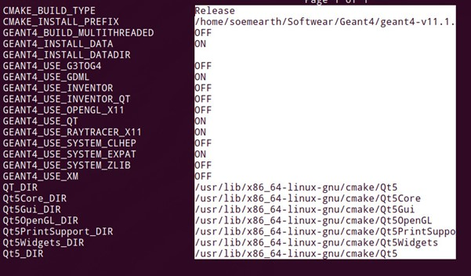
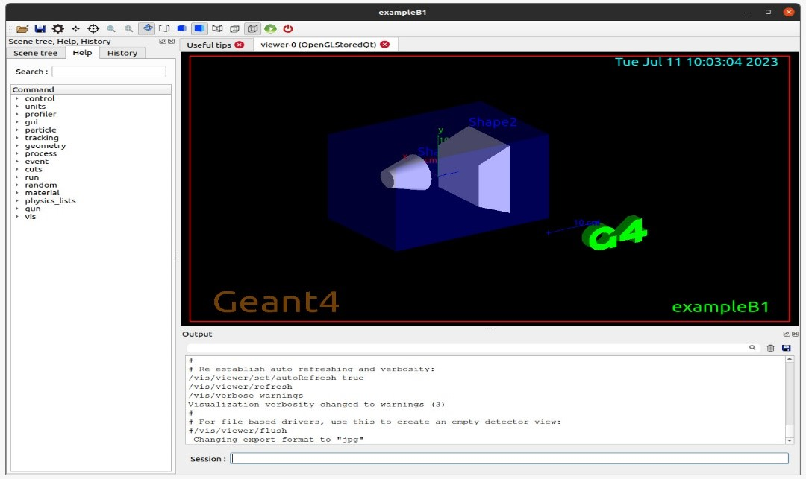

Introduction:
The GEANT4 toolkit is the most widely used particle simulation toolkit, with applications in fields ranging from medical science to space science. It is used worldwide for both commercial and academic purposes. The toolkit, created by the international GEANT4 collaboration, is written in C++, implements Monte Carlo Simulations, and utilizes object-oriented programming. GEANT stands for 'Geometry and Tracking.'
We can design volumes, create particle sources, and track energy transfer. Although initially created to simulate high energy and nuclear physics experiments, it is now an invaluable tool in various other fields. All this to say, it's a pretty neat tool for researchers. So let's get started with the installation guide!
Some things to take care of:
I would like to highlight a few important points before we begin the installation process:
Installation:
1. First create a directory, called geant4, somewhere you’ll remember(non-root access directory). Go to that directory and open terminal.2. Type in the following to update and upgrade any existing softwares and packages:
$: sudo apt-get update $: sudo apt-get upgrade3. Now, we will install the required pre-requisites for GEANT4. You may or may not have some of these already. Copy the following line:
$: sudo apt-get install cmake cmake-curses-gui libexpat1-dev qt5-default $: sudo apt-get install gcc g++ libxmu-dev libeotif-dev libxerces-c-dev4. Now that you have installed all the required prerequisites , we can start the installation from source. Download the latest tar.gz from the official webpage, and unpack it into the current directory. You can use the following command to do it directly
$: tar xzfv ~/Downloads/geant4-v11.1.2.tar.gz
a. Note: If your files get download to some other directory (for
some reason), please use the path to there instead.
b. Replace the ‘-11.1.2-‘ version with the one that you have
download.
5. Now if you enter the command ‘ls’ you should see the newly unpacked folder! Type the following:
$: cd (press tab, then enter) [You should be in the new folder
you created, type ‘ls’ to view its contents]
6. Type the command ‘pwd’ and copy the line (using ctr+shift+c) that shows up. Paste it in some other place and keep it minimised. We will need this line in step 8b. Now type the command ‘cd ..’ to navigate to the previous directory .
7. We will use the cmake-gui, the cmake GUI(as the name suggests). It is considerably easier then manually typing everything out. Enter the following commands next:
$: mkdir build $: cd build $: ccmake ..8. This will open up a window showing the various build options. Use the up-down keys to move up and down, and press enter to select. Make sure the following are done:
$: CMAKE_BUILD_TYPE: Release
$: CMAKE_INSTALL_PREFIX: (press ctr+shift+v to paste, this may not
work. If it doesn’t)Type in the line that you copied in step 6,
and add the following to the end: ‘-install’. This is how it
should look:
i. /your_copied_path/geant4/geant4-v11.1.2-install
c. GEANT4_USE_QT: On
d. GEANT4_USE_RAYTRACER_X11: On
e. (Optional) GEANT4_USE_GDML: On [Helpful for reading GDML files]

9. Leave the rest as is. These are all the basics configurations required to start off with GEANT4. If later, you want to add or delete something , reopen this cmake-gui and select the options you want(or don’t want) and rebuild.
10. Now press ‘c’ on your keyboard. There should be a change in the screen. If you can see the option labelled ‘Press [g] to generate and exit’, press g. If you don’t press c, until you do.
11. You should now be back in the terminal window. Press ‘ls,’ to see all the new folders added. Type in the following command:
$: make [-jN] (the part in parentheses is if you have multicore
available. Replace N with the number of cores, although make
sure it is less then the total cores available in your machine)
12. This will take time. Once it is over, type the command:
$: make installCongratulation! You have completed the installation process! We will now perform a few tests to make sure everything has been installed correctly.
Tests:
To test that the installation, run the example files present in GEAN4. Before you can run any code, you need to source a specific file every time you open a new terminal. Type in this command when you open a terminal:/(your-path)/geant4/geant4-v11.1.2-install/bin/geant4.shTo run an example:
$: cmake .. $: make $: ./exampleB1If all the steps work, a window should open.

Congratulations! You have now installed GEANT4. Happy researching!